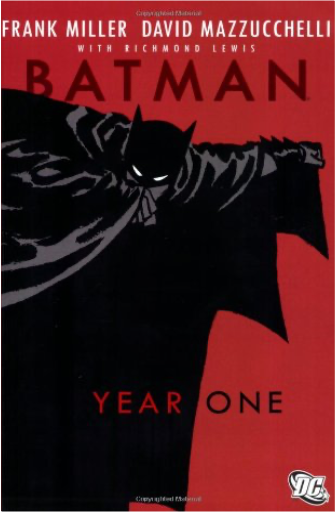

batman - the dark knight returnsfrank miller batman - the dark knight returnsfrank miller  If any comic has a claim to have truly reinvigorated the genre then The Dark Knight Returns by Frank Miller—known recently for his excellent Sin City series and, previously, for his superb rendering of the blind superhero Daredevil—is probably the supreme contender. Batman represented all that was wrong in comics and Miller set himself a tough task taking on the camp crusader and turning this laughable, innocuous children's cartoon character into a hero for our times. In his introduction the great Alan Moore (V for Vendetta, Swamp Thing, the arguably peerless Watchmen) argues that only someone of Miller's stature could have done this. Batman is a character known well beyond the confines of the comic world (as are his retinue) and so reinventing him, while keeping his limiting core essentials intact, was a huge task. batman - year onefrank miller, david mazzucchelli Whether you grew up reading Batman comics, watched the campy television show, or eagerly await each new movie, this is the book for you. A retelling of the events that led to Bruce Wayne's becoming Batman, this book combines Frank Miller's tight film-noir writing with David Mazucchelli's solid artwork.  traité des cinq rouesmusashi miyamoto traité des cinq rouesmusashi miyamoto Au XVIe siècle, Miyamoto Musashi, samouraï invaincu par une vie de combats, maître ès armes et esprit de nombreux disciples, se retire dans une grotte quelques mois avant sa mort et rédige ce classique de la littérature universelle : Traité des Cinq Roues. Ce guerrier nous donne en un texte lumineux l'essence des arts martiaux et le secret d'une stratégie victorieuse qui transcende la violence et devient art de vivre et d'agir. Attitude qui explique aujourd'hui les raisons des succès japonais dans tous les domaines. Une leçon à méditer et à pratiquer : car l'esprit de l'art de l'épée peut s'appliquer à tous les gestes de la vie quotidienne. |


 Made with Delicious Library
Made with Delicious LibraryNancy, State zipflap congrotus delicious library Thomas, Julien